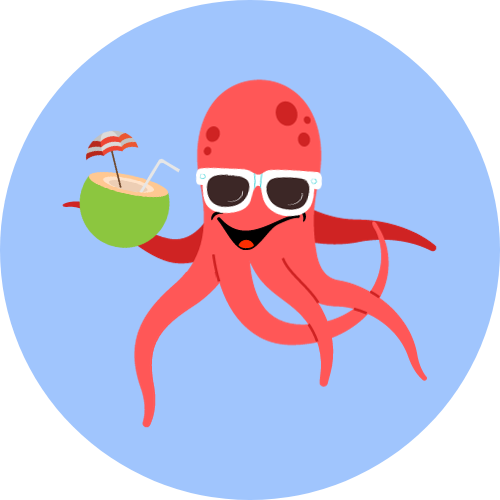

<section class="text-gray-400 bg-gray-900 body-font">
  <div class="container px-5 py-24 mx-auto flex flex-col">
    <div class="lg:w-4/6 mx-auto">
      <div class="rounded-lg h-64 overflow-hidden">
         <!--Agregar img !-->
      </div>
      <div class="flex flex-col sm:flex-row mt-10">
        <div class="sm:w-1/3 text-center sm:pr-8 sm:py-8">
          
           <!--CHECAR RUTA IMG-->
          <div class="flex flex-col items-center text-center justify-center">
            <h2 class="font-medium title-font mt-4 text-white text-lg">Aquality</h2>
            <div class="w-12 h-1 bg-blue-500 rounded mt-2 mb-4"></div>
            <p class="text-base text-gray-400">
              Ambriz Rangel Alexia M.<br>
              Mosco Salgado Cristian.<br>
              Reyes Cruz Jorge Jurgen.<br>
              Rodriguez Nuñez Diego Eduardo.
            </p>
          </div>
        </div>
        <div class="sm:w-2/3 sm:pl-8 sm:py-8 sm:border-l border-gray-800 sm:border-t-0 border-t mt-4 pt-4 sm:mt-0 text-center sm:text-left">
          <p class="leading-relaxed text-lg mb-4">Decidimos desarrollar Aquality porque creemos firmemente que la crisis actual de la sobrepesca y los desafíos ambientales que enfrenta la vida marina son cuestiones críticas que merecen atención inmediata. Con la mayoría de nosotros desconectados de los problemas que afectan a nuestros océanos, es fácil pasar por alto la afectación a estos con nuestro consumo, por ello decidimos no solo buscar una solución, sino que también hagamos conciencia, que reflexionen que cada compra puede tener una repercusión si es en exceso contribuyendo al bienestar de los océanos y la conservación de las especies en peligro. Con Aquality, buscamos la forma de ser parte de la solución y no del problema para un futuro más sostenible y equilibrado.</p>
        </div>
      </div>
    </div>
  </div>
</section>